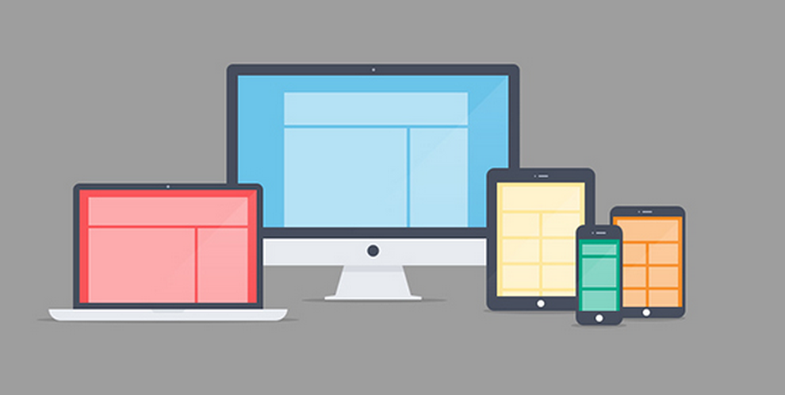
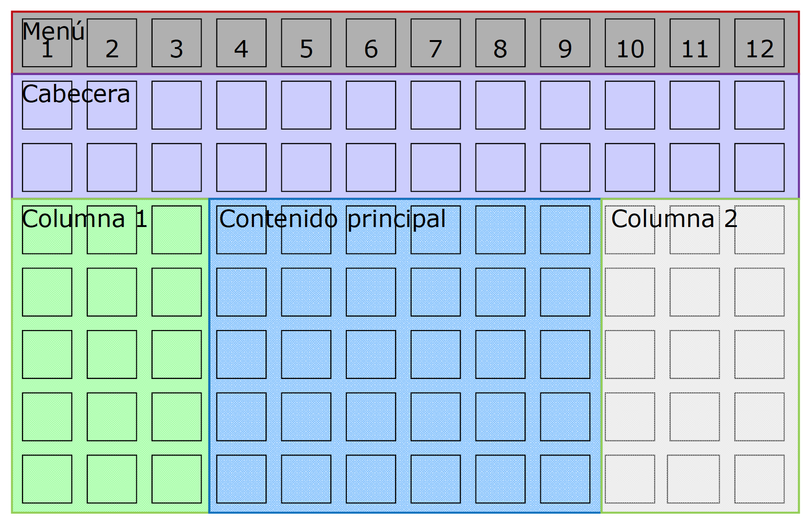
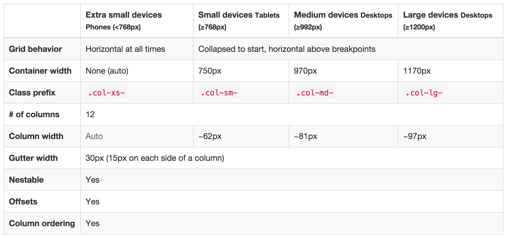

BOOTSTRAP 3
Framework CSS
Created by José Drac / @josedrac

¿Qué es Bootstrap 3?
Bootstrap es un framework desarrollado por la gente de Twitter y liberado a la comunidad; nos permite desarrollar sitios web responsive e interfaces de forma rápida combinando CSS, HTML5 y Jquery.
Dos versiones clave: 2.0 (2012) y 3.0 (MOBILY FIRST) (2013)
... OMG !!
¿USAR UN FRAMEWORK?
Una vez conocemos lenguajes de desarrollo web debemos pensar vale la pena usar un framework y, en caso afirmativo, que framework es el mejor para nuestras necesidades.
Cuando utilizo un css...

VENTAJAS
- Rapidez
- Comodidad
- Componentes
- Soporte
Así si !!
INCOVENIENTES
- Aprendizaje
- Exceso de código
- Semántica
- Aspecto final
¿PORQUE UTILIZAR BOOTSTRAP?
- Mobile First
- Descarga personalizable.
- Optimizado para pre-procesador css
- Compatibilidad entre navegadores.
- Uso de font icons.
- Excelente documentación.
- Comunidad online.
Excelente grid responsive
Bootstrap cuenta con un layout responsive de 12 columnas el cual se adapta a los diferentes tamaños de dispositivos. Para trabajar con este layout se necesita usar las clases predefinidas que nos ofrece además de seguir un orden preestablecido con algunas clases.
DESVENTAJAS
Es necesario adaptarse a su forma de trabajo
- Aunque la curva de aprendizaje es liviana, hay que familiarizarte con su estructura y nomenclatura.
- Si se va a utilizar el grid, el diseño visual debe estar adaptado a las columnas. Además el ancho de las columnas y gutters es variable según el dispositivo y su contexto.
- Por defecto ya tiene anchos, margenes y altos de línea.
- Ajustarse a los cortes responsive definidos
ENTENDIENDO EL GRID
RESPONSIVE
¿Que cortes tenemos?
¿QUE PROPORCIONA BOOTSTRAP?
BootstrapCONSEJOS
Todos los integrantes de proyecto deben conocer y trabajar con Bootstrap
- Conocer las ventajas y limitaciones del toolkit.
- Conocer las implicaciones de realizar cambios importantes.
- Debe convertirse en la guía de estilos web del proyecto para maquetadores, programadores, UX, diseñadores gráficos, generadores de contenido y otros proveedores.
CONSEJOS
El flujo de trabajo debe cambiar
- Antes de ponerte a diseñar o maquetar piensa en cada elemento que compone una página.
- Si se trata de un módulo: organiza el trabajo de HTML/CSS/JS de éste como tal. Esto es más eficiente y facilita su reutilización. Piensa en OOCSS.
- Si te lo montas bien, tu framework front-end terminará siendo una guía de estilos. Y la inspiración debe salir de allí, no al revés.
- Can you do pair programming with your designer?
Hay que conocer los conceptos básicos muy bien
Porque si no es asi...
Es totalmente escalable y flexible
Conociendo todo esto, reducimos el coste de la integración